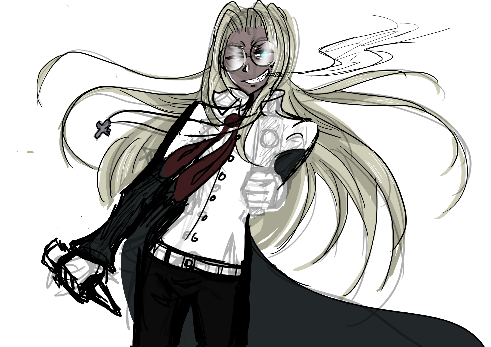

HOORAY! For me and my inability to finish sketches!!!
Anyway this sketch is suppose to be of Sir Integra Fairbrook Wingates Hellsing. Yep, the name is very long I still haven’t even memorised the entire thing yet!
She is from the anime ‘Hellsing’ which I watched for the first time a few days ago. She is one of my favourite characters from the anime so that’s why I decided to draw some very unfinished fan art of her!
Amy